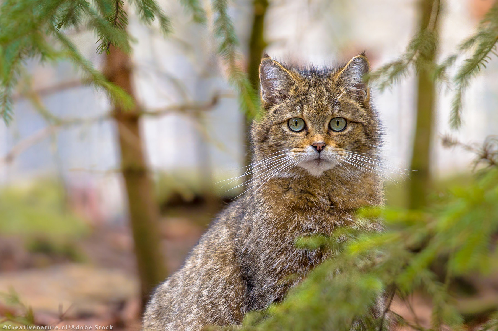

Animal welfare and protection: EU actions
The EU has some of the highest animal welfare standards in the world. Find out how the law protects farm and laboratory animals, wildlife and domestic pets.
Read moreThe EU has some of the highest animal welfare standards in the world. Find out how the law protects farm and laboratory animals, wildlife and domestic pets.
Read moreLong journeys cause stress and suffering for the animals transported. The Parliament calls on EU countries to ensure their welfare more effectively.
Read more
The EU wants to restore the continent's biodiversity to save endangered species and human life. Read the article to find out more.
Read moreThe EU has some of the highest animal welfare standards in the world. Find out how the law protects farm and laboratory animals, wildlife and domestic pets.
Read moreLong journeys cause stress and suffering for the animals transported. The Parliament calls on EU countries to ensure their welfare more effectively.
Read moreThe EU wants to restore the continent's biodiversity to save endangered species and human life. Read the article to find out more.
Read more
A taxon is Data Deficient (DD) when there is inadequate information to make a direct, or indirect, assessment of its risk of extinction based on its distribution and/or population status.
See Species
A taxon is Least Concern (LC) when it has been evaluated against the Red List criteria and does not qualify for Critically Endangered, Endangered, Vulnerable or Near Threatened.
See Species
A taxon is Near Threatened (NT) when it has been evaluated against the criteria but does not qualify for Critically Endangered, Endangered or Vulnerable now, but is close to qualifying for or is likely to qualify for a threatened category in the near future.
See Species
A taxon is Vulnerable (VU) when the best available evidence indicates that it meets any of the criteria A to E for Vulnerable, and it is therefore considered to be facing a high risk of extinction in the wild.
See Species
A taxon is Endangered (EN) when the best available evidence indicates that it meets any of the criteria A to E for Endangered, and it is therefore considered to be facing a very high risk of extinction in the wild.
See Species
A taxon is Critically Endangered (CR) when the best available evidence indicates that it meets any of the criteria A to E for Critically Endangered, and it is therefore considered to be facing an extremely high risk of extinction in the wild.
See Species
A taxon is Extinct In The Wild (EW) when it is known only to survive in cultivation, in captivity or as a naturalized population (or populations) well outside the past range. A taxon is presumed Extinct in the Wild when exhaustive surveys in known and/or expected habitat, at appropriate times (diurnal, seasonal, annual), throughout its historic range have failed to record an individual. Surveys should be over a time frame appropriate to the taxon's life cycle and life form.
See Species
A taxon is Extinct (EX) when there is no reasonable doubt that the last individual has died. A taxon is presumed Extinct when exhaustive surveys in known and/or expected habitat, at appropriate times (diurnal, seasonal, annual), throughout its historic range have failed to record an individual. Surveys should be over a time frame appropriate to the taxon's life cycle and life form.
See Species
A taxon is Not Evaluated (NE) when it has not yet undergone assessment against the specified criteria to determine its conservation status, population trends, habitat requirements, or any other relevant attributes. This classification is applied to taxa for which there is insufficient information available to make an evaluation or when the evaluation process has not been conducted.
See Species